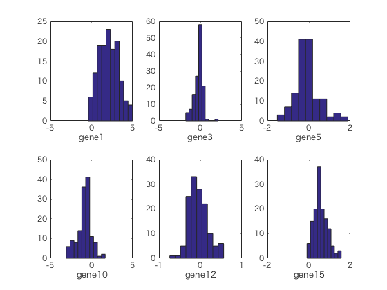

Contents
- Loading example data
- Exercise 1. HISTGRAM
- You can draw multiple histgram by using subplot
- Exercise 2. SCATTER PLOT
- Specify the MEAN
- Add a unit circle
- Calculate standard deviation
- Calculate variance-covariance-matrix 分散共分散行列 C を計算します
- Calculate eigenvalue decomposition of C. 行列 C の固有値分解を計算します
- Draw a covariance oval
- Exercise for Report: 3 multiple scatter plots
- Exercise 4. PCA
Loading example data
練習用のデータをMATLABの中に読み込む
X_org = load('NBLexpression.dat');
z = X_org(1,:);
z
X = X_org(2:end,:);
size(X)
z =
1 列から 13 列
0 0 0 0 0 0 0 0 0 0 0 0 0
14 列から 26 列
0 0 0 0 0 0 0 0 0 0 0 0 0
27 列から 39 列
0 0 0 0 0 0 0 0 0 0 0 0 0
40 列から 52 列
0 0 0 0 0 0 0 0 0 0 0 0 0
53 列から 65 列
0 0 0 0 0 0 0 0 0 0 0 0 0
66 列から 78 列
0 0 0 0 0 0 0 0 1 0 0 1 0
79 列から 91 列
0 0 0 0 0 0 0 0 0 0 0 0 0
92 列から 104 列
0 0 0 0 0 0 0 0 0 1 0 0 0
105 列から 117 列
0 0 0 1 1 1 1 1 1 1 1 1 1
118 列から 130 列
0 1 1 1 1 1 1 1 1 1 1 1 1
131 列から 136 列
1 1 1 1 1 1
ans =
1000 136
Exercise 1. HISTGRAM
Here, we draw a histgram of expression levels of a gene with specifying mean and SD. 一つの遺伝子の発現量のヒストグラム（度数分布）を可視化する。平均と標準偏差も合わせて表示する。
figure i1 = 1; gname1 = sprintf('gene%d',i1); hist( X(i1, :) ) xlabel( gname1 ) % Add mean and SD. m = mean( X(i1,:) ) sd = std( X(i1,:) ) hold on plot( m+[0,0], [0,25], 'r-', 'LineWidth', 2 ) plot( m+sd+[0,0], [0,25], 'r--', 'LineWidth', 2 ) plot( m-sd+[0,0], [0,25], 'r--', 'LineWidth', 2 )
m =
2.0607
sd =
1.1981
You can draw multiple histgram by using subplot
subplot を用いることで複数の度数分布を描いてみます
figure i0 = [1, 3, 5, 10, 12, 15]; for i = 1:length(i0) subplot(2,3,i) hist( X(i0(i),:) ) gname = sprintf('gene%d',i0(i)); xlabel( gname ) end
Exercise 2. SCATTER PLOT
２つの遺伝子の発現量散布図（scatter plot）を描きましょう
i1 = 2; i2 = 3; figure plot( X(i1,:),X(i2,:),'.') xlabel( sprintf('gene%d',i1) ) ylabel( sprintf('gene%d',i2) )
Specify the MEAN
平均値も合わせて表示します
m1 = mean( X(i1,:) ); m2 = mean( X(i2,:) ); hold on plot( m1, m2, 'ro' )
Add a unit circle
単位円を描いてみましょう
t = 2*pi*([0:360]/360);
gx = sin(t);
gy = cos(t);
plot( gx+m1, gy+m2, 'g-' )
Calculate standard deviation
標準偏差を計算します
sd1 = std( X(i1, :) )
sd2 = std( X(i2, :) )
%plot( sd1*gx+m1, sd2*gy+m2, 'b-' )
sd1 =
0.9140
sd2 =
0.5269
Calculate variance-covariance-matrix 分散共分散行列 C を計算します
C = cov( X([i1, i2], :)' )
C =
0.8353 -0.2363
-0.2363 0.2776
Calculate eigenvalue decomposition of C. 行列 C の固有値分解を計算します
[V,D] = eig( C )
% Be sure that C = V * D * V' holds. 固有値分解の結果を確かめます
sum( sum( abs( V*D*V' - C ) ) )
V =
-0.3443 -0.9389
-0.9389 0.3443
D =
0.1910 0
0 0.9220
ans =
2.2204e-16
Draw a covariance oval
共分散楕円を描きます
ex = V(1,1)*sqrt(D(1,1))*gx + V(1,2)*sqrt(D(2,2))*gy; ey = V(2,1)*sqrt(D(1,1))*gx + V(2,2)*sqrt(D(2,2))*gy; plot( ex+m1, ey+m2, 'r-', 'LineWidth', 2 )
Exercise for Report: 3 multiple scatter plots
Draw six scatter plots with covariance ovals for six arbitrary pairs of genes. 遺伝子 i1 と遺伝子 i2 のペアに対応する散布図を以下で表示することができます。 このさい、予後良（z=0）と予後悪（z=1）の例を青と赤で色分けします。 これを参考にして任意の6ペアに対応する散布図を共分散楕円をつきで表示してみましょう。 6つの遺伝子ペアの中に予後予測に役立ちそうなペアはありましたか？
figure plot( X(i1,z==0), X(i2,z==0), 'b.', ... X(i1,z==1),X(i2,z==1), 'rx') xlabel( sprintf('gene%d',i1) ) ylabel( sprintf('gene%d',i2) )
Exercise 4. PCA
主成分分析を行うことで、第一主成分と第二主成分を求め、散布図を描きます。 このさい、予後良（z=0）と予後悪（z=1）の例を色分けします。
geneset = [1:500]; % an arbitrary geneset Xo = X( geneset, : ); m = mean( Xo, 2 ); % m(i) is mean expr. level of gene i Y = Xo - repmat( m, 1, size(Xo,2) ); [U,S,V] = svds( Y, 30 ); % singular value decomposition size(V) figure plot( V(z==0,1), V(z==0,2), 'b.', ... V(z==1,1), V(z==1,2), 'ro') xlabel('PC1') ylabel('PC2')
ans = 136 30